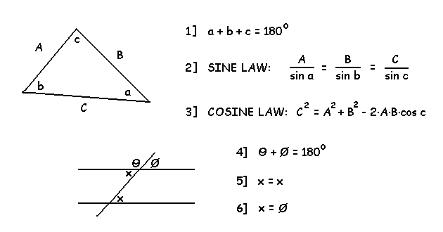
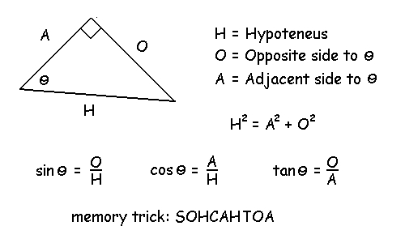
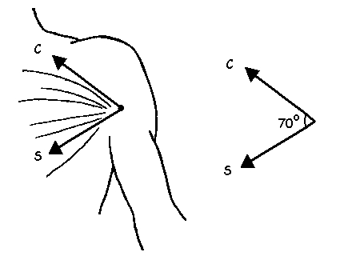
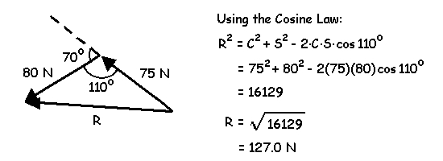
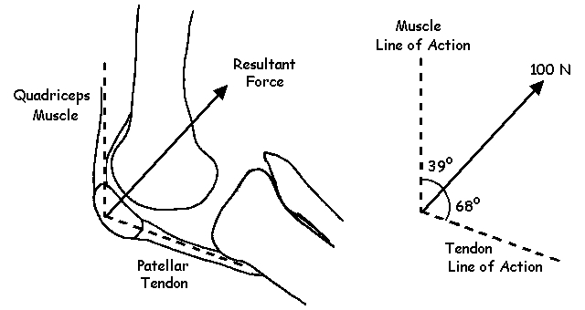
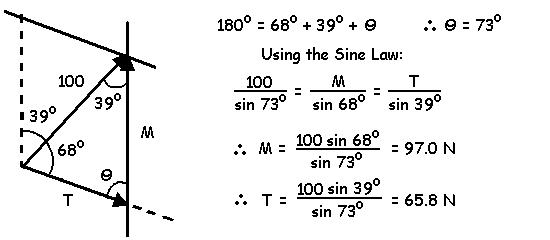

Trigonometry and Vector Addition
It is more convenient to find the resultant of two vectors analytically rather than graphically. In order to do this however, it is necessary to some basic trigonometric laws. The figure below shows a triangle with the sides labelled with upper case letters and the coresponding opposite angles with lower case letters.
In the case of a "right angle triangle", where one of the angles is known to be 90 degrees, the Pythagorean Theorem can be used as well as the following trigonometric relationships.
I will now solve two examples using these trigonometric laws.
Example 1: Determine the magnitude of the resultant pectoralis force given the clavicular portion (C = 75 N) and sternal portion (S = 80 N) and the angle between them is 70 degrees.
Solution
Place S tip-to-tail on C and draw the resltant (R) from the tail of C to the tip of S. This forms a triangle which has two known sides and the angle between them.
Example 2: Suppose we knew that the magnitude of the resultant force on the patella was 100 N and the line of action of the muscle was at a 39 degrees and the line of action of the tendon was 68 degrees from the resultant. Find the magnitudes of the muscle and tendon forces?
Solution
Place two lines parallel to the lines of action of the two forces.
